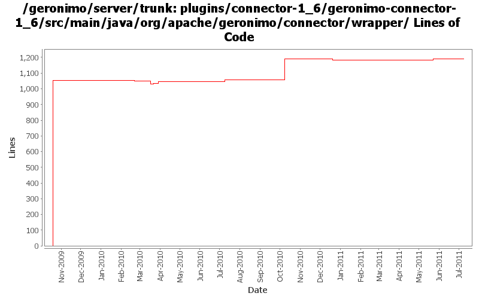

[root]/plugins/connector-1_6/geronimo-connector-1_6/src/main/java/org/apache/geronimo/connector/wrapper
 outbound
(4 files, 677 lines)
outbound
(4 files, 677 lines)
 connectiontracking
(1 files, 57 lines)
connectiontracking
(1 files, 57 lines)
 security
(2 files, 190 lines)
security
(2 files, 190 lines)
 transactionlog
(2 files, 254 lines)
transactionlog
(2 files, 254 lines)
 work
(5 files, 353 lines)
work
(5 files, 353 lines)

| Author | Changes | Lines of Code | Lines per Change |
|---|---|---|---|
| Totals | 29 (100.0%) | 1353 (100.0%) | 46.6 |
| djencks | 16 (55.2%) | 1087 (80.3%) | 67.9 |
| rickmcguire | 5 (17.2%) | 181 (13.4%) | 36.2 |
| gawor | 2 (6.9%) | 39 (2.9%) | 19.5 |
| xiaming | 1 (3.4%) | 25 (1.8%) | 25.0 |
| xuhaihong | 4 (13.8%) | 20 (1.5%) | 5.0 |
| genspring | 1 (3.4%) | 1 (0.1%) | 1.0 |
GERONIMO-6058 Replace StringBuffer usage with StringBuilder
6 lines of code changed in 1 file:
GERONIMO-5890 use bundle.getEntry() to search resource
25 lines of code changed in 1 file:
No function change, just remove many unused import declarations
14 lines of code changed in 3 files:
GERONIMO-5230 Add Bean Validation Support to the connector 1.6 implementation.
Some unit tests for the builder support.
1 lines of code changed in 1 file:
GERONIMO-5230 Add Bean Validation Support to the connector 1.6 implementation.
Changes to Geronimo base.
180 lines of code changed in 4 files:
fix the datasouce reference to reenable the DatabaseInitializationGBean.
1 lines of code changed in 1 file:
Adapt to changed openejb-jee tree. Expose admin objects as osgi services
15 lines of code changed in 1 file:
let the sql command be specified as a string, or an external file, or a resource
38 lines of code changed in 1 file:
minor fix for DatabaseInitializationGBean
1 lines of code changed in 1 file:
GERONIMO-4360 server code changes corresponding to component changes rev 925908
5 lines of code changed in 1 file:
GERONIMO-5190, GERONIMO-4360. Make jaxb dd objects fit into deployment system a little bit, and add some incomplete connector annotation support
13 lines of code changed in 1 file:
GERONIMO-5152 mostly, use annotations for gbeans
0 lines of code changed in 1 file:
move packages to avoid split-packagle problems with tx components
1054 lines of code changed in 12 files: